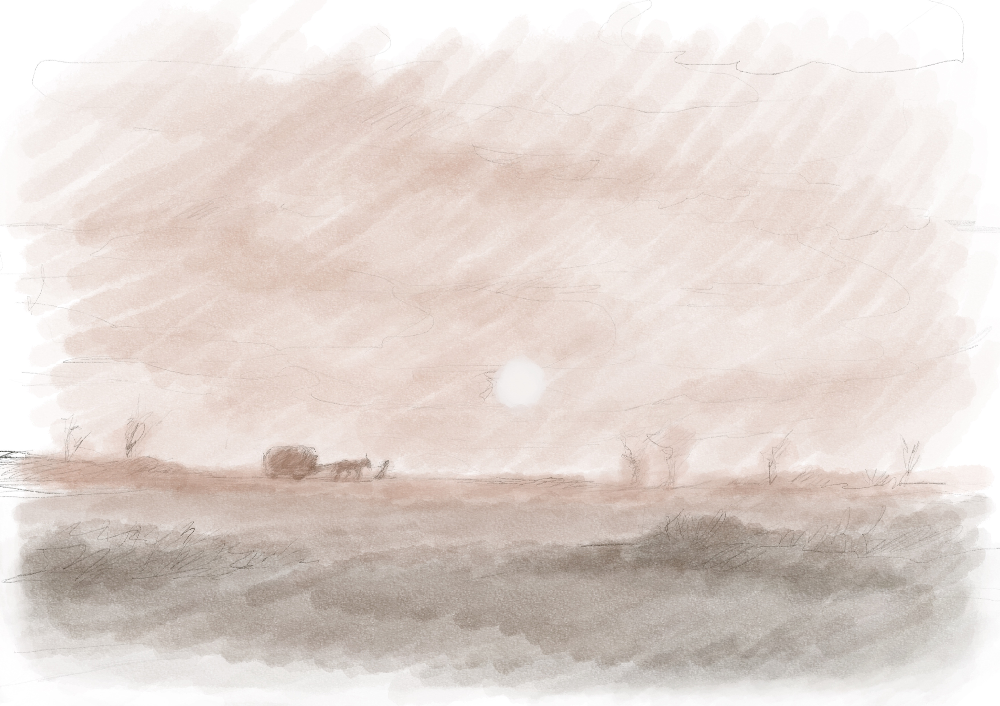
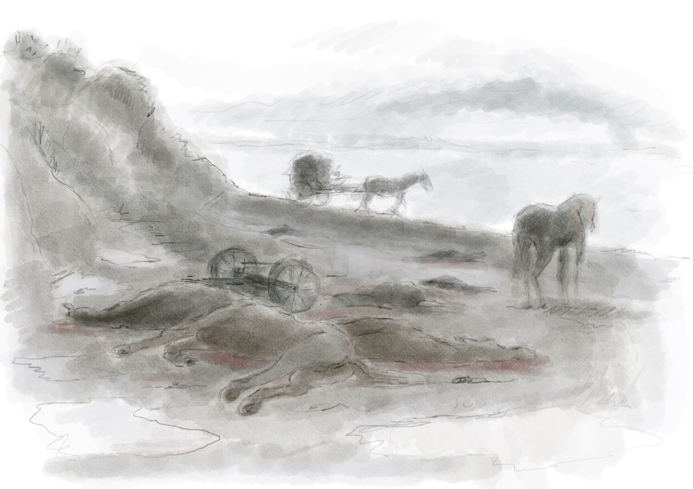
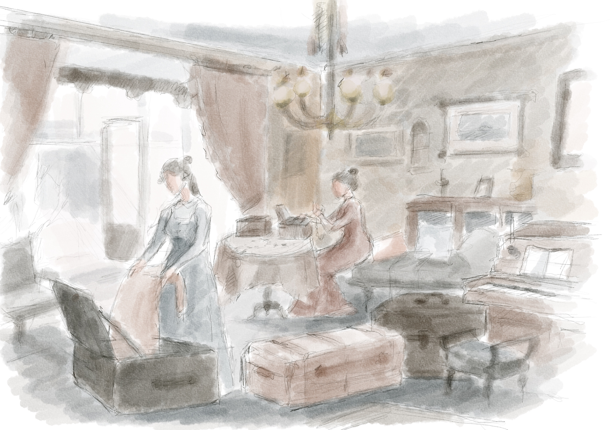
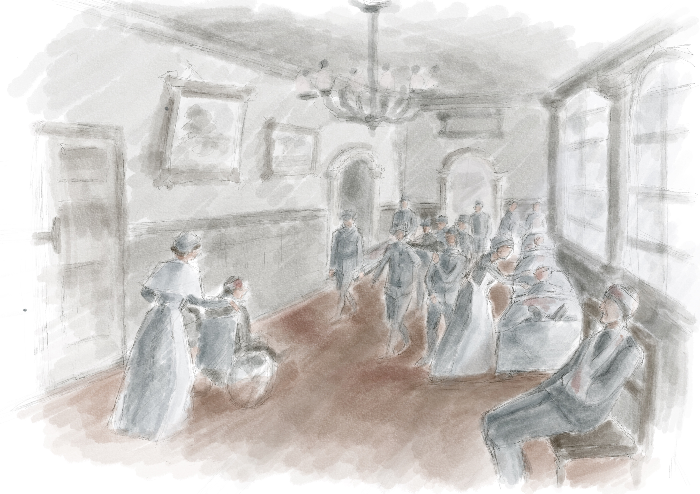
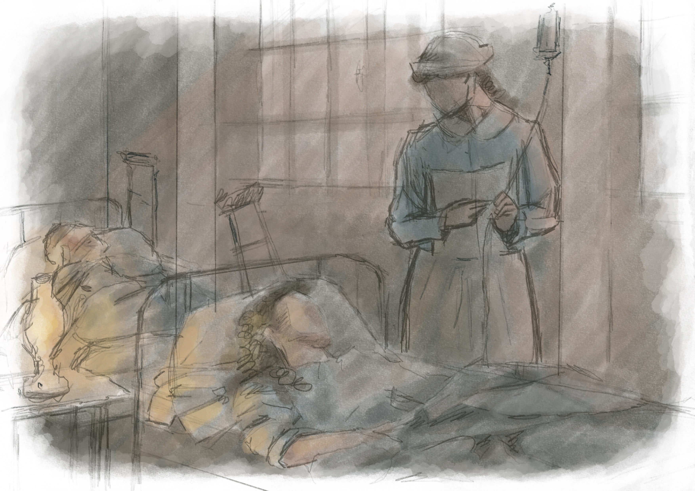
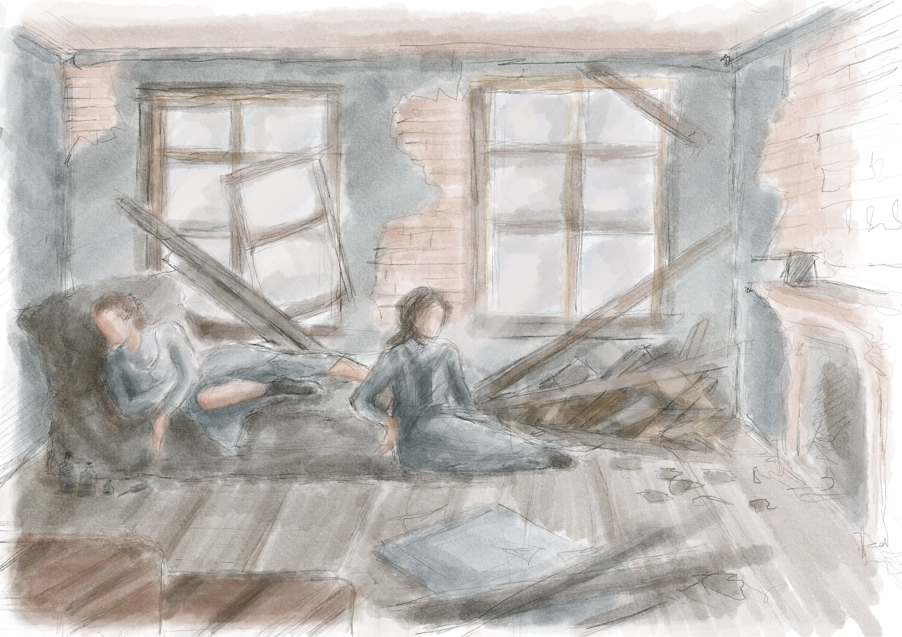
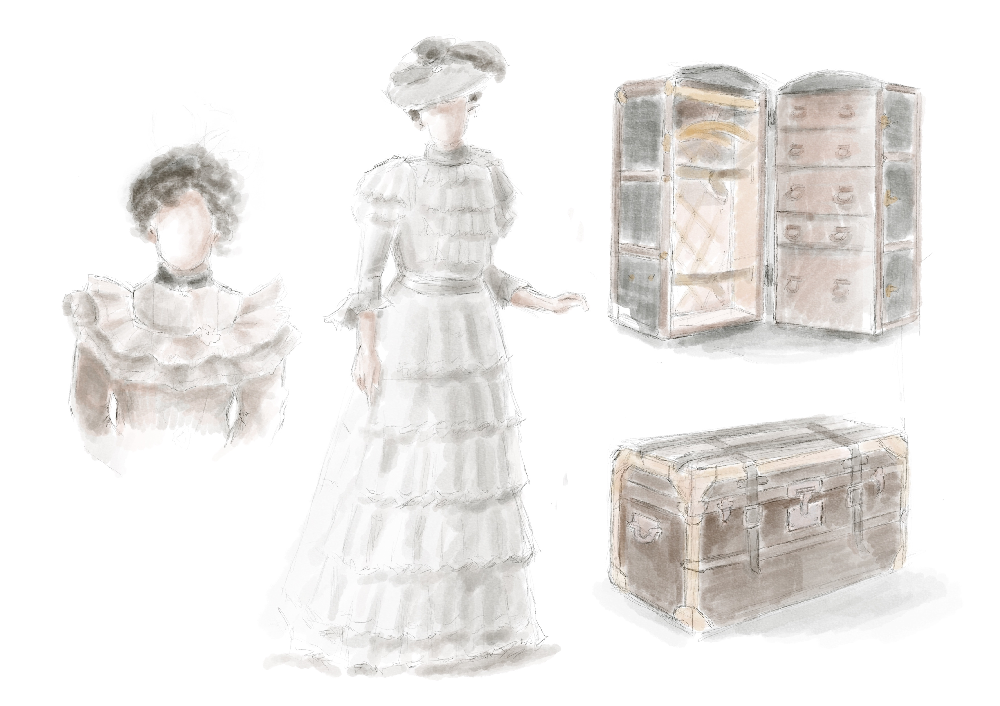
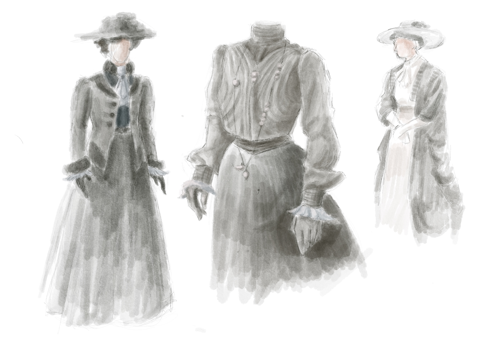
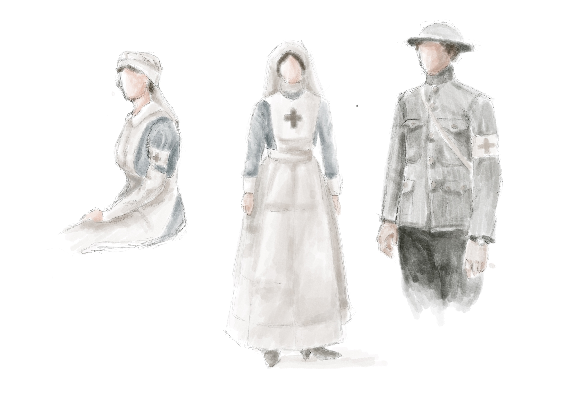

An independent Bucharest-based production company focused on feature films and documentaries. Founded by filmmaker Alexandru Belc and editor-producer Patricia Belc, Metronom develops projects rooted in Romanian history, memory, and the lives of ordinary people caught in extraordinary times.
Alexandru Belc is a Romanian filmmaker working between fiction and documentary. A graduate of the National University of Theatre and Film "I.L. Caragiale" in Bucharest, he began his career as assistant director on films by Cristian Mungiu, Corneliu Porumboiu, and Alexander Nanau.
His feature documentaries 8 Martie (2012) and Cinema mon amour (2015) screened at TIFF, Sarajevo, Edinburgh, and Sydney film festivals, with the latter winning the Cinema Warrior award at Trieste.
In 2022, his fiction feature debut Metronom won the Best Director award in the Un Certain Regard section at the Cannes Film Festival, followed by Best Film prizes at Gijón, Pessac, and Jerusalem International Film Festivals.
He is co-founder, along with Patricia Belc, of Metronom Films, where he develops and directs his current projects.
Patricia Belc is a Romanian film editor and producer, born in Bucharest in 1992. A graduate of the Bucharest Film Academy (Editing and Sound Department, 2014), she has collaborated as editor with directors including Nae Caranfil, Ivana Mladenovic, Iulia Rugină, and Radu Jude.
Her feature debut as editor, Ivana the Terrible (2019, dir. Ivana Mladenovic), won the Special Jury Prize — Filmmakers of the Present at the Locarno International Film Festival and the Golden Pram for Best Feature Film at Zagreb IFF.
She edited Metronom (2022, dir. Alexandru Belc), winner of the Best Director award at Cannes Un Certain Regard.
As co-founder and producer at Metronom Films, she leads the production of Between Day and Night, the company's first fiction feature, in co-production with Midralgar (France).

Adapted from the novel by Henriette Yvonne Stahl
Bucharest, 1916. As the German army marches on the capital, two young women — Ana, frail and searching for her place in the world; Marta, an aristocrat haunted by morphine and a hidden past — are forced to flee. They take the road of exile to Iași, joining the king, the government, and a fractured country in retreat.
What begins as escape becomes a journey of social descent, memory, and survival. The film moves the source novel out of its enclosed urban interiors and onto the road — a neo-western in winter light, where the war is heard but rarely seen, and history pressures the lives of two women who began this story belonging, and end it belonging to no one.
Reference sketches · 1916, on the road from Bucharest to Iași








Character references, costume breakdowns, location studies and storyboard sequences generated with AI tools as part of the visual development process for Between Day and Night.
Romania, winter 1916. War has emptied the country of its men and most of its mercy. Ana, a young army nurse, leads Marta north through the snow toward a safety neither of them can name. Marta's body is failing her, and the medicine that keeps her upright is the same thing pulling her further away. What begins as one woman's duty to another becomes a study in dependency — how far care can be stretched before it turns into something closer to loss.
She doesn't say much. She acts. Dark coat, dark hair, a face that has been in this war longer than it should have been. She carries Marta because someone has to, and there is no one else left to ask.
She's dying by degrees and trying not to show it. The medicine holds her together and is also taking her apart. Ana watches this happen at close range and calls it nursing.
He came to his parents' house to finish a novel. The war arrived before he could leave. The servants are gone. The house stays. Now it is just him and the silence and a manuscript that keeps refusing its own ending.
He inherited the house where his mother was the servant. He comes from Marta's past, from the summers when she came here as a girl and he was the cook's son in the courtyard. He knows her doses, her rhythms, where to find what she needs. He has always known. He has never once said what he feels about her. That silence is the only honest thing left between them.
Persona was built out of frustration. Final Draft is the industry standard for production, and rightly so — but when you're at an empty page at 2 AM, you don't need production tools. You need speed.
A native macOS and iPadOS app for writing screenplays at the pace of thought. Auto-formatting that stays out of the way. Full FDX import and export. A reading mode with annotations that go directly to Apple Notes. No subscription.
Write in Persona. Move to Final Draft when production calls.